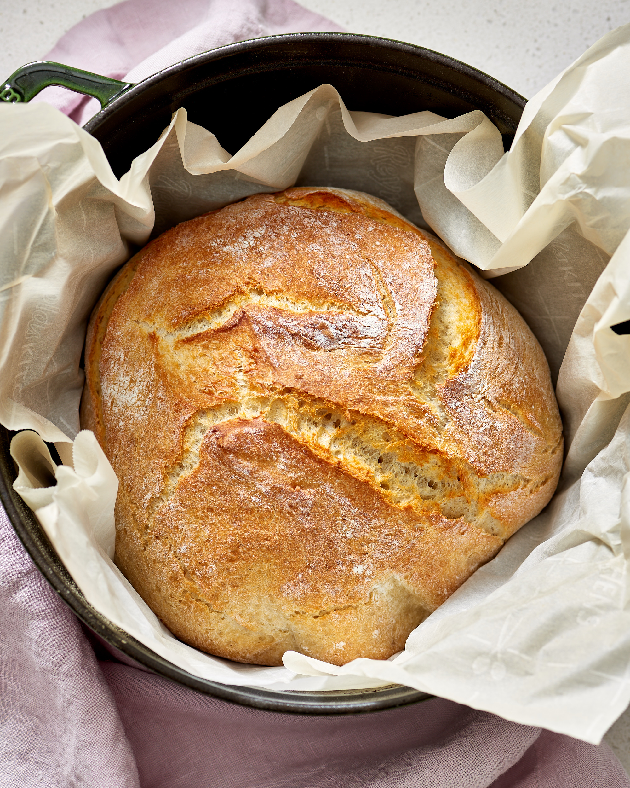

No Knead Bread

Description
This recipe will allow you to easily make bakery quality bread without
the hassle
of worrying about proofing or kneading. By simply mixing all the ingredients together
and allowing to sit out overnight, you will succeed in making a crusty, artisan style
bread.
Ingredients
Steps
- Mix all ingredients together in large bowl.
- Cover with plastic and set out overnight (18-24 hours).
- Form into ball and allow to proof an additional 2 hours. Near the end of proofing time
preheat the oven to 500 degrees.
- Put dough into dutch oven and bake for 30 minutes with cover. Then bake an additional
15 minutes uncovered.
- Cool completely.